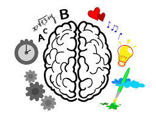
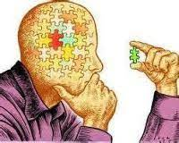

Pensamiento reflexivo
Como su propio nombre lo dice, el pensamiento reflexivo es aquel que nos permite reflexionar acerca de un tema en específico. Este tipo de pensamiento consiste endar vueltas a un tema en la cabeza, es decir solo pensando acerca del tema o del problema y tomar en cuenta todas las posibles consecuencias. Es un estado de duda en el que se encuentra una persona y esto implica pensar, buscar, investigar para poder encontrar soluciones que aclaren la duda de la persona.
La reflexión se da por el interés, la curiosidad o lo que se llama también motivación natural. Por el interés nos convertimos en exploradores, investigadores de todo aquello que pensamos o incluso de aquello que sentimos. Reflexión significa aplicar el pensamiento a la consideración de un tema o una idea meditando y examinando. El pensamiento reflexivo es la capacidad de cada persona para poder hacer preguntas, de poder hacer el proceso de pensamiento reflexivo. br Debe ser aplicada por cualquier persona en la vida para resolver problemas.
Características del pensamiento reflexivo.
Para que se pueda saber más a fondo que es el pensamiento reflexivo se debe saber cómo este funciona y que impacto tiene sobre cada una de las personas, ya que este al ser un fenómeno humano es casi imposible conocer a alguien que no posee este tipo de pensamiento.
Para comenzar, se necesita saber la función principal de esta, la cual es transformar un momento o situación donde habite maldad, dudas, peleas o confusiones, a una situación clara, libre de dudas. En otras palabras, su función es crear ideas y realizar acciones que valgan la pena. El pensamiento reflexivo también influye en la toma de decisiones difíciles, ya que estas pueden terminar siendo vitales para el cambio del futuro, ya sea una decisión buena en la que se logre el éxito en la meta de alguien, o una mala decisión que pueda llevar al fracaso. Haciendo que la toma de decisiones sea algo más manejable para que se puedan tomar las mejores decisiones.
En que ocasiones se da el pensamiento reflexivo.
Como primero podríamos señalar, desde un punto de vista psicológico, que el pensamiento reflexivo es una consideración activa, persistente y cuidadosa de una creencia, a partir de los fundamentos que la sustentan y de las posteriores conclusiones hacia la cual tienden.
Otra definición consiste en concebir al pensamiento reflexivo en la base de la practica reflexiva. Se ha sostenido también que “la mejor manera de pensar”, se denomina pensamiento reflexivo, es decir el tipo de pensamiento que consiste en “darle vueltas a un tema en la cabeza y tomárselo en serio con todas sus consecuencias”. Este tipo de pensamiento tendría 2 fases, por una parte, implica:
A. Un estado de duda, de vacilación, de perplejidad, de dificultad mental, en la que se origina el pensamiento
B.
un acto de busca, de caza, de investigación, para encontrar algún material que esclarezca la duda que disipe la perplejidad. La
naturaleza del problema determina la finalidad del pensamiento y la finalidad controla el proceso de pensar.
En otras palabras, el pensamiento reflexivo será aquella actividad cognitiva que sustenta el actuar con un grado importante de
originalidad, a través de la cual se realiza una cuidadosa examinación de los principios que sustentan la practica reflexiva. Este
pensamiento reflexivo, además, permite asumir una actividad casi permanente, estableciendo una relación.
Como aplicar el pensamiento reflexivo.
-
El primer paso para ser más reflexivos es la duda interesada y crítica, en vez de preferir la destructiva y cínica (siempre
discutir las cosas que llegan). -
El segundo paso es conocer y averiguar todo aquello que se tiene frente a sí mismo (conocer, entender los diferentes sucesos
o acontecimientos).
Se ha sostenido también que “la mejor manera de pensar”, se denomina pensamiento reflexivo, es decir, el tipo de pensamiento
que consiste en “darle vueltas a un tema en la cabeza y tomárselo en serio con todas sus consecuencias”.
El proceso reflexivo es planteado como un proceso a través del cual realizan reflexiones, describiéndolo como un diálogo mental,
que se va enriqueciendo al ir integrando las ideas que surgen de las vivencias en cada sesión.
|
|
|
|---|---|
|  |  |